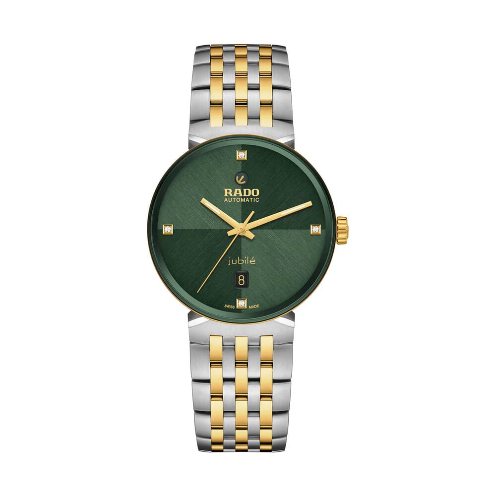
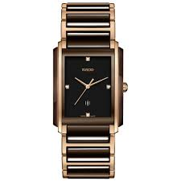

Classic
For formal look, slim profile and polished design language.
Discover the unique character of each Rado collection. From the adventurous Captain Cook to the elegant Centrix.

Tradition & Exploration

Elegance & Clarity

High-Tech Ceramic Icon

Modern Classic

The Original Scratch-Proof

Dynamic & Sporty

Harmonious Design

Linear Edge
Choose your watch family based on style and purpose.
For formal look, slim profile and polished design language.
For active life with durable build and clear readability.
For bold identity with unique case shape and materials.
Visual guide for each major family.